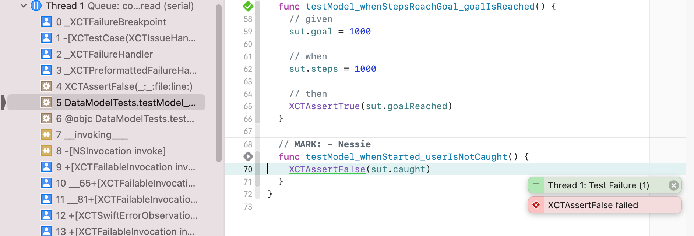
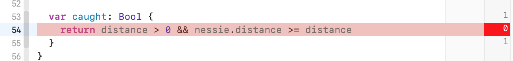

4: Test Expressions¶
The TDD process is straightforward, but writing good tests may not always be. Fortunately, each year, Xcode and Swift have become more capable. This means you have many features at your disposal that help with both writing and running tests.
This chapter covers how to use the XCTAssert functions. These are the primary actors of the test infrastructure. You’ll go through gathering code coverage to verify the minimum amount of testing. Finally, you’ll use the test debugger to find and fix test errors.
In this chapter, you’ll learn about:
• XCTAssert functions • UIViewController testing • Code Coverage • Test debugging
Note
Be sure to use the Chapter 4 starter project rather than continuing with the Chapter 3 final project. It has a few new things added to it, including placeholders for the code to add in this tutorial.
Assert methods¶
In Chapter 3, “TDD App Setup,” you used XCTAssertEqual exclusively. There are several other assert functions in XCTest:
• Equality:XCTAssertEqual,XCTAssertNotEqual • Truthiness:XCTAssertTrue,XCTAssertFalse • Nullability:XCTAssertNil,XCTAssertNotNil • Comparison:XCTAssertLessThan,XCTAssertGreaterThan, XCTAssertLessThanOrEqual, XCTAssertGreaterThanOrEqual • Erroring:XCTAssertThrowsError,XCTAssertNoThrow
Ultimately, any test case can be boiled down to a conditional: (does it meet an expectation or not) so any test assert can be re-composed into a XCTAssertTrue.
Note
With XCTest, a test is marked as passed as long as there are no failures. This means that it does not require a positive XCTAssert assertion. A test with no asserts will be marked as success, even though it does not test anything!
App state¶
In the previous chapter, you built out the functionality to move the app from a not started state to an in-progress one. Now is a good time to think about about the whole app lifecycle.
Here are the possible app states, as represented by the AppState enum:
• notStarted: The initial state of the app. • inProgress: The app is actively monitoring the activity of the user and Nessie. • paused: The app was paused by the user. Nessie is put to sleep and the activity tracking stops. • completed: The user has reached their activity goal before Nessie caught up. • caught: Nessie caught up to the user and “ate” them.
The following diagram shows the possible state transitions:

The solid lines represent user action on the UI, and the dotted lines happen automatically due to time or activity events. The user-based transitions will be covered in this chapter project, and the automatic transitions will be covered in Chapter 5: “Test Expectations.”
Asserting true and false¶
To build out the state transitions, you need to add some more information to the app about the user. The completed and caught states depend on the user activity, the set goal and Nessie’s activity. To keep the architecture clean, the app state information will be kept separate from the raw data that is tracking the user.
Add a new unit test case class to the test target, in the Data Model group. Name it DataModelTests. Once again, and like always, remove testExample() and testPerformanceExample().
Next, add the following import at the top of the file:
@testable import FitNess
Next, add the following instance variable above setUpWithError():
var sut: DataModel!
Now, you have a red test case class. To fix it, open DataModel.swift and add the following, the minimum to get the test to compile:
class DataModel {
}
This creates a stub class to fix the compiler error. You’ll build upon this piece-by- piece.
Next, open DataModelTests.swift and replace setUpWithError() and tearDownWithError() with the following:
override func setUpWithError() throws {
try super.setUpWithError()
sut = DataModel()
}
override func tearDownWithError() throws {
sut = nil
try super.tearDownWithError()
}
These create a new DataModel for each test, and then cleans it up afterwards.
Next, add the following code to the end of DataModelTests:
// MARK: - Goal
func testModel_whenStarted_goalIsNotReached() {
XCTAssertFalse(
sut.goalReached,
"goalReached should be false when the model is created")
}
This test introduces XCTAssertFalse, which checks that the expected value is false. Each XCTAssert function can also take an optional String message. This message is displayed in the standard editor and report navigator’s error log when the test fails. If you follow the test naming convention and only use one XCTAssert per test, then you won’t normally need to supply an error message. While test name will usually be descriptive enough to inform you why a failure occurred, it can be useful to add a message if the assertion isn’t obvious.
Fix the non-compiling test by adding the following to DataModel in DataModel.swift:
var goalReached: Bool { return false }
Build and test, and the test will pass.
The initial state is the boring state. Next build out the business logic.
First, open DataModelTests.swift and add the following test method:
func testModel_whenStepsReachGoal_goalIsReached() {
// given
sut.goal = 1000
// when
sut.steps = 1000
// then
XCTAssertTrue(sut.goalReached)
}
This tests the logic “the goal is reached when the number of steps equals or exceeds the goal.”
Now, you need a goal and steps for it to compile. Open DataModel.swift and add the following below goalReached:
var goal: Int?
var steps: Int = 0
goal is an optional because it should be set explicitly by the user.
Now, the test will build, but fail since you previously hard coded the value of goalReached to false.
Let’s fix that, replace goalReached with the following implementation:
var goalReached: Bool {
if let goal = goal,
steps >= goal {
return true
}
return false
}
Run the test again. It’s a little tricky on the fingers, but you can use Product ▸ Perform Action ▸ Test Again (^⌥⌘G) to re-run the last test from anywhere in Xcode. Now, the test passes, and you’ve seen true and false asserts.
Pretty much every assert is just a Boolean test and can be rewritten as such. That means you can write your own helper methods that look like XCTAssert’s. These just have to eventually evaluate to a Boolean that is passed to XCTAssertTrue().
Testing Errors¶
If the optional goal property isn’t set, it doesn’t make sense for the app to enter the inProgress state. Therefore starting the app without a goal is an error!
Make it a real error. Open AppModel.swift, then add the throws keyword to the function signature of start():
func start() throws {
Now, fix the compilation errors. In StepCountController.swift replace startStopPause(_:) with the following:
@IBAction func startStopPause(_ sender: Any?) {
do {
try AppModel.instance.start()
} catch {
showNeedGoalAlert()
}
updateUI()
}
Once you’re all done, tapping the Start button without setting a goal will display an alert. Don’t worry about writing a test first for this right now.
Next, update testAppModel_whenStarted_isInInProgressState() in AppModelTests.swift. Add a try? to the sut.start() line to quiet the error. This test should still pass. You’ll come back here after changing the logic in a bit.
Next, still in AppModelTests.swift, add the following test before testAppModel_whenStarted_isInInProgressState():
func testModelWithNoGoal_whenStarted_throwsError() {
XCTAssertThrowsError(try sut.start())
}
Using XCTAssertThrowsError, you can verify that an error is thrown if the model is started in its initial state without a goal set.
This test fails since there is no error thrown yet. To fix that, open AppModel.swift and add the following instance variable:
let dataModel = DataModel()
The app model will be the container for the data model, since the app’s data is a subset of the app’s state. The data model’s goal is needed to check for an error.
Finally, add the following guard statement at the top of start():
guard dataModel.goal != nil else {
throw AppError.goalNotSet
}
Now, build and test testModelWithNoGoal_whenStarted_throwsError, and the test will pass.
Next, verify that setting a goal means that start() will not throw an error. Open AppModelTests.swift and add the following under // MARK: - Given:
func givenGoalSet() {
sut.dataModel.goal = 1000
}
Next, add the following test under testModelWithNoGoal_whenStarted_throwsError():
func testStart_withGoalSet_doesNotThrow() {
// given
givenGoalSet()
// then
XCTAssertNoThrow(try sut.start())
}
This test should go right to green, since the app logic was already written. Even though no code had to be added or changed for this test, it’s still TDD since the tests are leading the way. This test just completes checking all the cases of the logical flow.
Finally, it’s time to fix all the other tests that started failing due to this change. First, add the following to the top of testAppModel_whenStarted_isInInProgressState:
// given
givenGoalSet()
Next, open StepCountControllerTests.swift and add the following under // MARK: - Given:
func givenGoalSet() {
AppModel.instance.dataModel.goal = 1000
}
Finally, in the two tests under // MARK: - In Progress, add the following to the top of each:
// given
givenGoalSet()
Build and run all the tests. They all pass! Changing these existing tests to pass again after changing the app logic is another aspect of the refactor phase of the TDD cycle.
If you build and run the app, there will now be an alert when Start is tapped and the app won’t move into the inProgress state. In the next section you will update the app with the ability to save the goal.

View controller testing¶
Now that the model can have a goal set and an app state that checks it, the next feature is to expose that the state to the user. In the previous chapter, you wrote some unit tests for StepCountController. Now build on that with some proper view controller unit testing.
Functional view controller testing¶
The important thing when testing view controllers is to not test the views and controls directly. This is better done using UI automation tests. Here, the goal is to check the logic and state of the view controller.
Functional testing is done by using separate methods for interacting with the UI (callbacks, delegate methods, etc.) from logic methods (updating state).
Note
If you have experience with other app architectures, using something like MVVM or VIPER makes it cleaner to test this type of logic. Separating a ViewModel from the controller takes the unit-testable logic out of the controller. For the purposes of this section, you’ll continue to build the app using the traditional Apple MVC model. This is what’s covered in most of the documentation and the traditional place to start developing iOS applications.
First, open StepCountControllerTests.swift. Next, add the following test under // MARK - Goal:
func testDataModel_whenGoalUpdate_updatesToNewGoal() {
// when
sut.updateGoal(newGoal: 50)
// then
XCTAssertEqual(AppModel.instance.dataModel.goal, 50)
}
This test calls updateGoal(newGoal:) and verifies the data model has been properly updated.
Be sure to also restore the state by adding the following line to tearDownWithError() above super.tearDownWithError():
AppModel.instance.dataModel.goal = nil
As expected, the test will fail. Let’s turn the test green. Open StepCountController.swift and replace updateGoal(newGoal:) with the following:
func updateGoal(newGoal: Int) {
AppModel.instance.dataModel.goal = newGoal
}
Another beautiful green test.
Using the host app¶
The next requirement for the app is that the central view should show the user’s avatar in the running position. The word should signifies an assertion, so you’ll write one, now. First, open StepCountControllerTests.swift. Next, add the following under // MARK: - Chase View:
func testChaseView_whenLoaded_isNotStarted() {
// when loaded, then
let chaseView = sut.chaseView
XCTAssertEqual(chaseView?.state, .notStarted)
}
The test builds, but does not pass, because chaseView is nil. What gives?
Well, there is a cheat in the code to allow the existing tests to pass. Under normal app flow, a StepCountController is created and populated by the storyboard. It’s already loaded by the time any app code gets to execute.
In this test the sut is initialized directly, which means its starting state is not the same as when the app runs. Fortunately, there is a clean way to handle this.
When unit tests are run as part of the Test action in an app scheme, Xcode uses a Host Application as specified in the target settings.
Open the General tab of the Project editor for the FitNessTests target. You’ll see that FitNess is selected as the Host Application.

This means that running the test action, will launch the host app on the specified destination (simulator or device). The test runner waits for the app to load before starting the tests, and the tests are run in the app’s context.
As a consequence, you have access to the UIApplication object and the whole View hierarchy in the tests.
In the Project navigator, under FitNessTests target, add a new group: Test Classes. Next, create a new Swift File, ViewControllers.swift, in that group
Next, replace the contents of this file with the following:
import UIKit
@testable import FitNess
func getRootViewController() -> RootViewController {
guard let controller =
(UIApplication.shared.connectedScenes.first as?
UIWindowScene)?
.windows
.first?
.rootViewController as? RootViewController else {
assert(false, "Did not a get RootViewController")
}
return controller
}
This function navigates the app’s window to retrieve the root view controller, which is of type RootViewController. This helper function will be used to obtain other view controllers.
Next, create another new group, Test Extensions under FitNessTests. In that group, add a new Swift file: RootViewController+Tests.swift.
Replace the contents of this file with the following RootViewController extension:
import UIKit
@testable import FitNess
extension RootViewController {
var stepController: StepCountController {
return children.first { $0 is StepCountController }
as! StepCountController
}
}
Now, you have all the pieces to get the StepCountController from the host app.
Fixing the tests¶
Go back to StepCountControllerTests.swift, and replace setUpWithError() with the following:
override func setUpWithError() throws {
try super.setUpWithError()
let rootController = getRootViewController()
sut = rootController.stepController
}
Remove the call to viewDidLoad from testController_whenCreated_buttonLabelIsStart(), as this is no longer needed.
Next, add the following method under // MARK: - Given:
func givenInProgress() {
givenGoalSet()
sut.startStopPause(nil)
}
This sets the app into the inProgressState. It’s ensured by the test testController_whenStartTapped_appIsInProgress().
Finally, add the following test to the bottom of StepCountControllerTests:
func testChaseView_whenInProgress_viewIsInProgress() {
// given
givenInProgress()
// then
let chaseView = sut.chaseView
XCTAssertEqual(chaseView?.state, .inProgress)
}
This test will fail since the chaseView is not yet updated. Open StepCountController.swift and replace updateChaseView() at the bottom with the following:
private func updateChaseView() {
chaseView.state = AppModel.instance.appState
}
The test testChaseView_whenInProgress_viewIsInProgress will now pass, and no more funny business with loading view controllers.
!!! note: One alternate way of retrieving and testing a view controller can be done as follows: First, get a reference to the storyboard: let storyboard = UIStoryboard(name: "Main", bundle: nil)
Second, get a reference to the view controller:
let stepController = storyboard.instantiateViewcontroller(withIdentifier: "stepController") as! StepCountController
Finally, if needed, you may load the view as follows:
stepController.loadViewIfNeeded()
Following this pattern allows you to instantiate a fresh view controller for each test, and it affords the option to set up and tear down the view controller for each test.
Test ordering matters¶
Build and test the whole target, and most of the tests should pass, but not testController_whenCreated_buttonLabelIsStart. This test fails.
Now, only test testController_whenCreated_buttonLabelIsStart and it will pass. Hrm... strange.
Open the report navigator and look at the result for when you last ran all the tests. Look at the test failure: XCTAssertEqual failed: ("Optional("Pause")") is not equal to ("Optional("Start")").

This message tells you not only that the button text is not what’s expected, but specifically that the button text is “Pause.” That’s what the button should say when the app is inProgress. This violates the assumption that the test is starting with a fresh StepCountController.
The previous change to using the host app’s StepCountController meant that a new controller is not created every setUpWithError() and the app state is persisted. In order to have clean tests, you need to reset the state in tearDownWithError().
To help with this, you can create a new function on AppModel to reset the state. But, first, write the tests.
Open AppModelTests.swift. Add the following helper to the Given section:
func givenInProgress() {
givenGoalSet()
try! sut.start()
}
This puts the app in an inProgress state, allowing for the state restart test to actually test a change.
Next, add the following to the bottom of the test case class:
// MARK: - Restart
func testAppModel_whenReset_isInNotStartedState() {
// given
givenInProgress()
// when
sut.restart()
// then
XCTAssertEqual(sut.appState, .notStarted)
}
This tests that the not-yet-added restart() puts the model back into notStarted. To get the test to pass open AppModel.swift and add the following to AppModel:
func restart() {
appState = .notStarted
}
This function will be used as a test helper for now, but eventually will be part of the whole app’s state cycle.
Finally, go back and fix the original issue. Change tearDownWithError() in StepCountControllerTests.swift to:
override func tearDownWithError() throws {
AppModel.instance.dataModel.goal = nil
AppModel.instance.restart()
sut.updateUI()
try super.tearDownWithError()
}
Now, running the whole target’s tests will succeed.
Randomized order¶
There is also an option in the Test action of the scheme to randomize the test order. Edit the FitNess scheme. Select the Test action. In the center pane, next to FitNessTests is an Options... button. Click that and, in the pop-up, check Randomize execution order. This will cause the tests to run in a random order each time.

This can expose hidden inter-test dependencies that you wouldn’t catch with the default ordering. The downside is that the ordering is not guaranteed, meaning you might have missed the previous issue. Also, if an ordering issue does come up, it might be hard to reproduce if it was very specific. Sporadic and hard-to-diagnose test failures are one symptom that the random ordering uncovered an issue.
Code coverage¶
While on the subject of the scheme editor, open up the Test Action again. This time select the Options tab. There is a checkbox for Code Coverage. Check it.

Run the tests again. After the tests succeed, open the Report navigator. Under the latest test, there will be three reports: Build, Coverage and Log. Select Coverage to display the coverage report.

Code coverage is the measure of how many lines of app code are executed during tests. There will be a list of each file in the target along with the percentage of the code lines that were executed. Having 100% or close for a file means you’re following TDD closely. When the tests are written first, only the code needed to pass the test gets added.
Opening up an individual file will show the coverage on a per-function or closure basis. Double-clicking on a file or function name will open up that file in the editor.
Open StepCountController.swift and navigate to startStopPause(_:)

You’ll see a coverage annotation on the right side of the editor. The number shown represents the number of times that line was executed. Lines with a red coloring or a “0” indicate opportunities to add additional tests.
Lines with a striped red annotation mean that only part of that line was run. Hovering over the stripe in the annotation bar will show you in green which part was run and in red what was not.
In StepCountController, it looks like the startStopPause(_:) method was never called when AppModel.start() throws an error.
The problem with testing that condition is that, when there’s an error, an alert controller is shown. You could write a test that checks for that alert controller, but that is really the domain of UI automation testing. You could refactor StepCountController so that a variable is set or a callback is called in that error case, but then you would be modifying app code just to add a test. The test would then be testing itself and not app functionality, which does not provide any value.
The goal should be to get as close to 100% as possible. Coverage doesn’t mean the code works, but lack of coverage means that it’s not tested. For views and view controllers, it’s not expected to get to 100% coverage because TDD does not include UI testing. When you combine unit tests with UI automation tests, then you should expect to be able to cover most if not all of these files.
Debugging tests¶
When it comes to debugging tests, you’ve already practiced the first line of defense. That is: “Am I testing the right thing?”
Make sure:
• You have the right assumptions in the given statements. • Your then statements accurately reflect the desired behavior.
If nothing obvious in the test code appears, next check the test execution order for preserved state. Also use code coverage to make sure the right code paths are taken.
After trying that, you can use some other tools in Xcode’s arsenal. To try them out, it’s time to think about the other important actor in the app: Nessie.
Using test breakpoints¶
With Nessie in the picture, the data model gets a little more complicated. Here are the new rules with Nessie:
• When Nessie’s distance is greater than or equal to the user’s, Nessie wins (the user is caught). The user cannot be caught when the distance is at 0, which is the start condition. • If the user is caught by Nessie, the goal cannot be reached.
Open DataModelTests.swift and add the following test to DataModelTests:
// MARK: - Nessie
func testModel_whenStarted_userIsNotCaught() {
XCTAssertFalse(sut.caught)
}
This tests that with a fresh DataModel, the user is not caught. This test does not yet compile.
Fix the broken test by adding the following to DataModel in DataModel.swift:
// MARK: - Nessie
let nessie = Nessie()
var distance: Double = 0
var caught: Bool {
return nessie.distance >= distance
}
This adds a Nessie to the data model, a variable to track user distance, and a computed variable to compare the distances. A separate variable for distance is used instead of steps to keep the calculations cleaner later on.
Even with the updated code, the test still fails. There are several ways to go about diagnosing the problem. As you’ve already seen there are a few things to check:
• The test itself is correct, the given is a fresh DataModel as created in startUp(). The then is also correct, caught should be false. • The DataModel code was executed, as shown by the code coverage.
A good next step is to try out the debugger. In the Breakpoint navigator, click the + all the way at the bottom. Select Test Failure Breakpoint.

This creates a special breakpoint that halts execution when a unit test fails. Run the test again, and the debugger will stop at the test failure.

Open the variables view, and expand self and then sut.

Here, you’ll see that both distance and steps are 0. So the app logic is doing the right thing, Nessie is tied with the user, which should be the caught state. However, this is a special case in which the starting condition cannot result in a capture.
To fix this, open DataModel.swift and replace caught with the following:
var caught: Bool {
return distance > 0 && nessie.distance >= distance
}
Now, the test will pass. This might have been an obvious example, but it illustrates that you have all your normal debugging techniques available when running tests.
Completing coverage¶
If you take a look at the code coverage for DataModel.swift, it is no longer 100%. If you look at the file, notice the striped annotation in the updated caught. Hovering over the stripe shows that not of all the conditions were checked. The 0 tells you there is more test.

Open DataModelTests.swift and add the following test cases to complete DataModel coverage:
func testModel_whenUserAheadOfNessie_isNotCaught() {
// given
sut.distance = 1000
sut.nessie.distance = 100
// then
XCTAssertFalse(sut.caught)
}
func testModel_whenNessieAheadofUser_isCaught() {
// given
sut.nessie.distance = 1000
sut.distance = 100
// then
XCTAssertTrue(sut.caught)
}
Now, test and check out the DataModel coverage... 100%
Finishing out the requirements¶
There is one final piece that hasn’t been accounted for yet: The user cannot reach the goal if they have been caught. Add this test to the Goal tests section:
func testGoal_whenUserCaught_cannotBeReached() {
//given goal should be reached
sut.goal = 1000
sut.steps = 1000
// when caught by nessie
sut.distance = 100
sut.nessie.distance = 100
// then
XCTAssertFalse(sut.goalReached)
}
Then, to make the test pass, update goalReached in DataModel.swift:
var goalReached: Bool {
if let goal = goal,
steps >= goal, !caught {
return true
}
return false
}
Test again for success.
Challenge¶
In StepCountControllerTests.tearDownWithError(), there are separate calls to reset the AppModel and the DataModel. Since the data model is a property of the app model, refactor the data model reset into AppModel.restart(), along with the appropriate tests.
For an extra challenge, use some of the other XCTAssert functions not yet used, like XCTAssertNil or XCTAssertLessThanOrEqual.
A second challenge is to add the pause functionality to the app so the user can move back and forth between .paused and .inProgress. The pause doesn’t have to do anything else at this point, since the direct functionality will be covered in later chapters.
Key points¶
• Test methods require calling a XCTAssert function. • View controller logic can be separated in to data/state functions, which can be unit tested and view setup and response functions, which should be tested by UI automation. • Test execution order matters. • The code coverage reports can be used to make sure all branches have a minimum level of testing. • Test failure breakpoints are a tool on top of regular debugging tools for fixing tests.
Where to go from here?¶
For more on code coverage, this video tutorial (https://www.raywenderlich.com/ 3530-testing-in-ios/lessons/18) covers that topic. And you can learn everything and more about debugging from the Advanced Apple Debugging & Reverse Engineering (%5Bhttps://www.raywenderlich.com/books/advanced-apple-debugging-and- reverse-engineering%5D) book. The tools and techniques taught in that tome are just as applicable to test code as application code.
In the next chapter, you’ll learn about testing asynchronous functions using XCTestExpectation.